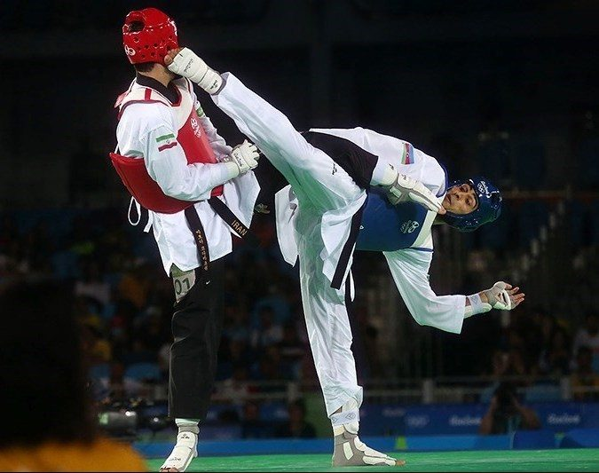

Сорн Сейвмей: удары, которые вывели камбоджийское тхэквондо на мировую карту
Пройдя путь от тихого детства в Пномпене до исторического золота Азиатских игр в Инчхоне, эта пионерка тхэквондо изменила спортивный ландшафт своей родины.

Шлепанье босых ног о потертый холст матов разносилось по скромному тренировочному залу в Пномпене задолго до того, как ее имя зазвучало на всю страну. Сорн Сейвмей выросла в спортивной семье, окруженная братьями и сестрами, которые также занимались единоборствами. Высокая от природы, она обладала идеальными антропометрическими данными для боевых искусств, однако ее путь требовал гораздо большего, чем просто рост и размах рук. Ей пришлось пробиваться сквозь спортивную инфраструктуру, которая практически не предлагала финансовой поддержки или современных тренировочных баз для будущих олимпийцев.
Тхэквондо вошло в ее жизнь почти случайно, когда она последовала за старшими братьями и сестрами в додзян. То, что начиналось как семейная рутина, быстро переросло в проявление свирепого соревновательного инстинкта. Сейвмей стремительно проходила через местные турниры, впитывая тактические нюансы спаррингов под руководством национальных тренеров, которые сразу разглядели в ней талант поколения. В стране, где футбол безраздельно властвовал над умами и ресурсами, боевые единоборства предоставляли суровый путь вперед тем, кто был готов терпеть изнуряющие тренировки без какой-либо подушки безопасности в виде профессиональных клубных контрактов или щедрых спонсорских сделок.
Творение истории в Инчхоне

Главный поворотный момент ее спортивной жизни наступил на Азиатских играх 2014 года в южнокорейском Инчхоне. Выступая в весовой категории до 73 кг, 19-летняя на тот момент спортсменка с поразительным хладнокровием проходила раунд за раундом в противостоянии с опытными соперницами по континенту. В финале за золотую медаль она победила соперницу из Ирана со счётом 7:4.
Этот результат имел колоссальное историческое значение. Когда судья поднял ее руку вверх, Сейвмей принесла Камбодже первую в истории золотую медаль Азиатских игр в любом виде спорта, прервав засуху, длившуюся с момента дебюта королевства на этих континентальных комплексных соревнованиях в 1954 году. Триумф вызвал стихийные празднества по всему Пномпеню, где толпы болельщиков приветствовали ее возвращение в международном аэропорту.
Преодоление трудностей и флаг в руках
Успех на континентальной арене привлек к ней пристальное внимание общественности и возложил на плечи тяжелый груз ожиданий. Последующие годы проверяли ее на прочность травмами и растущим уровнем международных состязаний. Несмотря на физический урон, Сейвмей продолжала представлять Камбоджу на самых грандиозных аренах и была знаменосцем страны на церемонии открытия Олимпийских игр 2016 года в Рио-де-Жанейро. В Рио она выступала в категории свыше 67 кг и уступила в 1/8 финала нидерландке Решми Оогинк. Кроме того, она четырежды выигрывала золото Игр Юго-Восточной Азии — в 2013, 2017, 2019 годах и в 2023 году на домашних Играх в Пномпене.

Дорога к следующим олимпийским циклам была усеяна препятствиями, включая квалификационные барьеры и сбои в мировом спортивном календаре. Тем не менее, ее присутствие на крупнейших чемпионатах оставалось мощным символом развития молодежного спорта в Юго-Восточной Азии. Вместе с сестрой Сорн Давин и братом Сорн Элитом, которые также занимаются тхэквондо, Сейвмей помогла сделать тхэквондо одной из самых доступных и успешных олимпийских дисциплин для камбоджийских атлетов.
Сегодня наследие Сорн Сейвмей простирается далеко за пределы ее медалей и трофеев. Она остается ключевой фигурой в камбоджийском спорте, вдохновляя новое поколение мальчишек и девчонок, которые затягивают защитную экипировку в местных клубах по всей стране. Ее путь от тренировочных залов Пномпеня до высшей ступени пьедестала в Инчхоне демонстрирует, как непоколебимая преданность делу способна изменить спортивную идентичность целой нации.